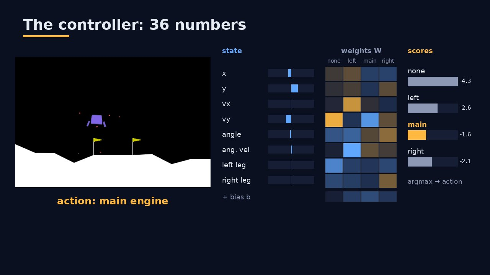
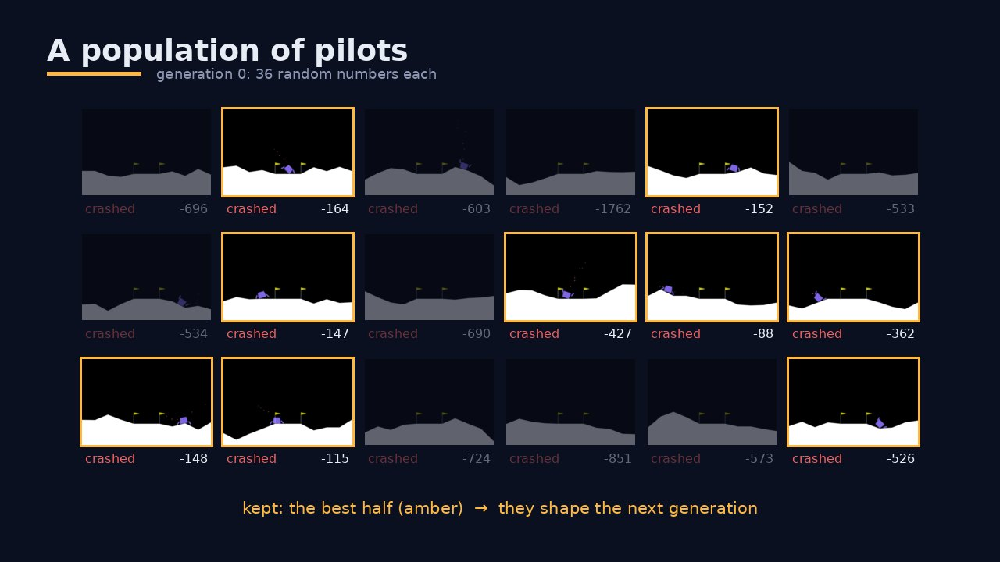
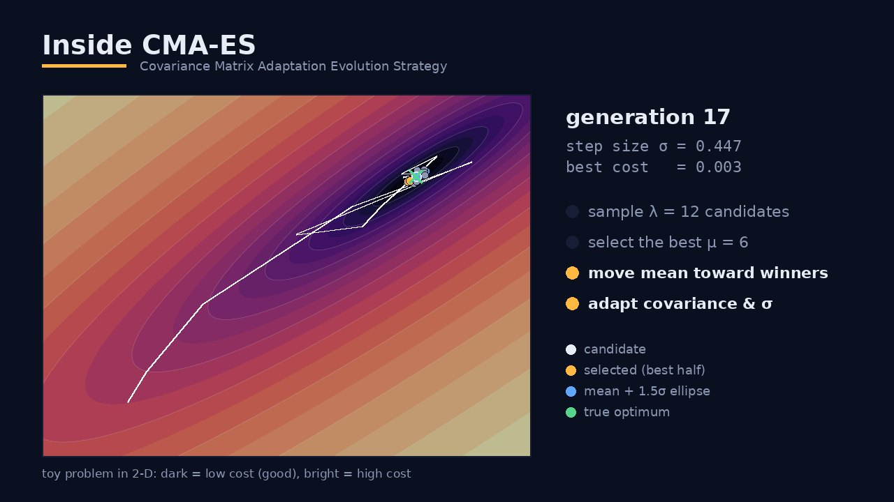
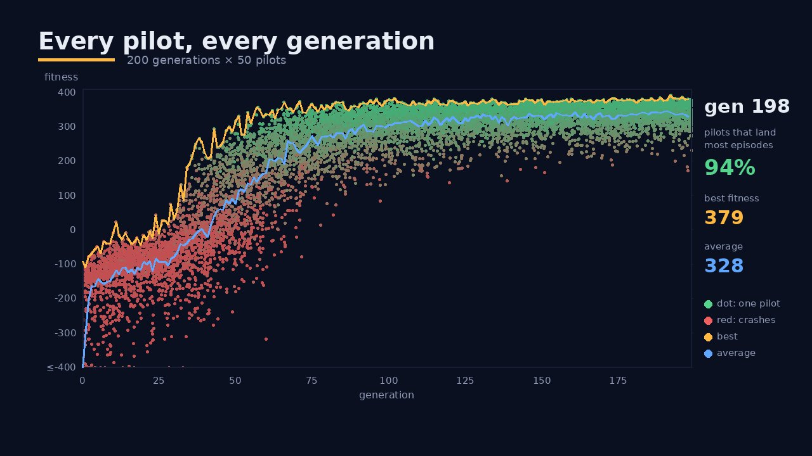
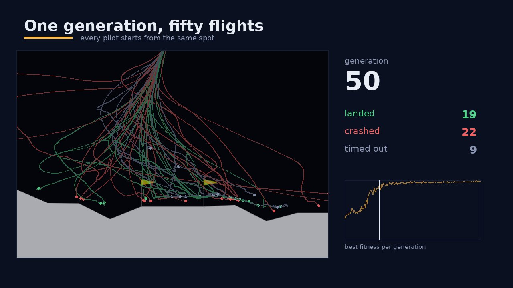
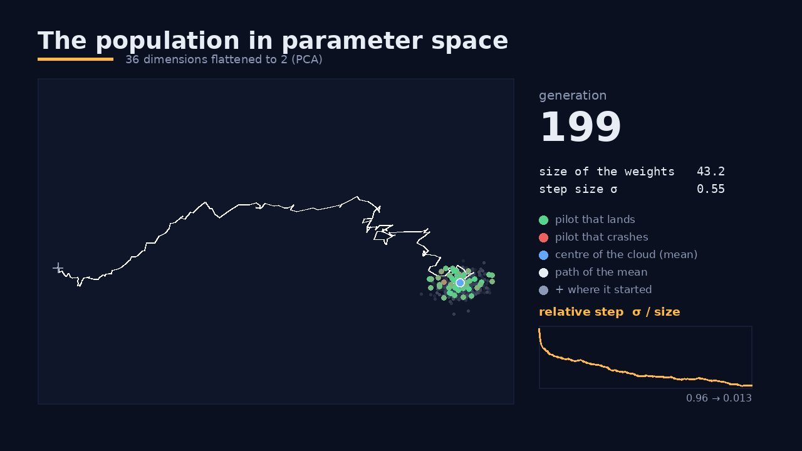
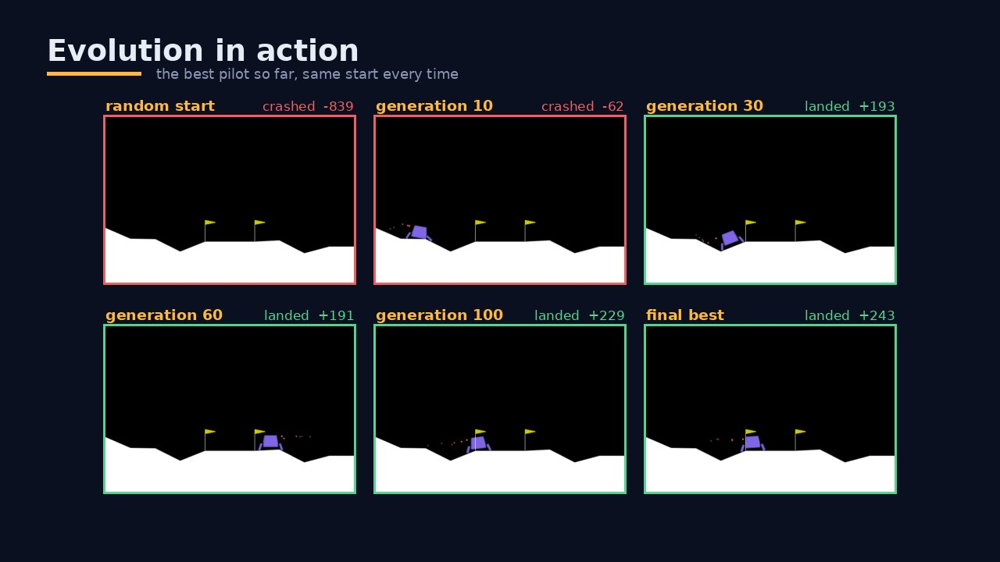
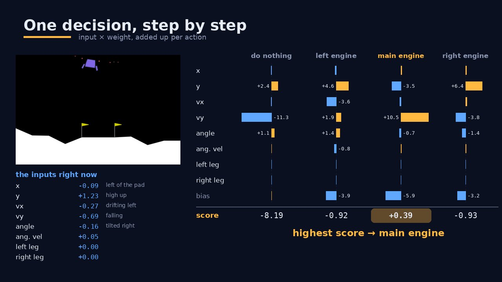
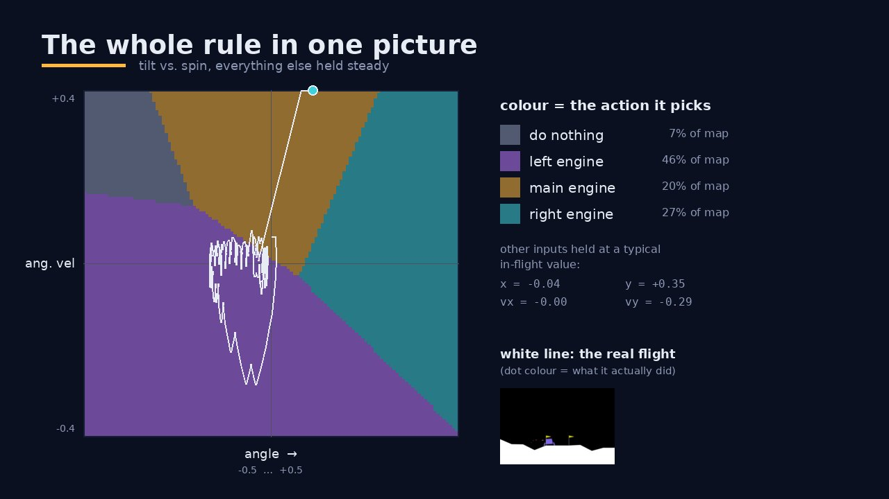
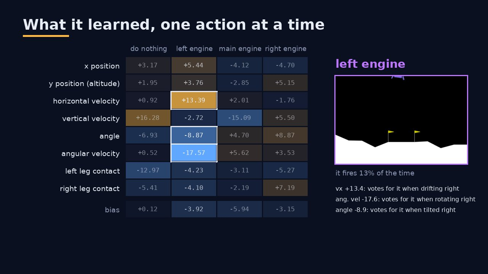

Landing on the Moon with 36 numbers
A genetic algorithm (CMA-ES) evolves a tiny linear controller that lands Gymnasium's LunarLander. It uses no neural network and no gradients, just a population of pilots that gets better every generation.
7-minute narrated explainer (captions in the player menu). Every frame was rendered from this repository's code and the trained model. Want it step by step? Take the 7 short lessons →
96%landing rate on 100 unseen episodes
244average episode reward (≥ 200 counts as solved)
339steps per episode, about 6.8 s of flight
36parameters in the whole pilot
1The problem
The lander starts high above the surface with a random push. It has to touch down softly between the two flags. Gravity pulls it down, and every engine burn costs fuel.
| The lander observes 8 numbers… | …and picks one of 4 actions |
|---|---|
| x, y position · horizontal & vertical velocity · angle · angular velocity · left / right leg contact | 0 do nothing · 1 fire left engine · 2 fire main engine · 3 fire right engine |
2The controller: one matrix multiplication

scores = state @ W + b # W: 8×4, b: 4 action = argmax(scores)
Each of the 8 inputs votes for each of the 4 actions through one weight. The action with the highest total fires. That makes 8 × 4 weights + 4 biases = 36 parameters.
This is linear_controller.py. The policy itself is a few lines of code. All the
intelligence lives in the 36 numbers, and finding good values for them is the genetic algorithm's job.
3Evolution: a population of pilots

Training never computes a gradient. Each generation it:
- Samples 50 candidate controllers, each a vector of 36 numbers.
- Evaluates each by flying 10 episodes and computing a fitness score.
- Selects the best half.
- Updates where the next generation is sampled from.
At generation 0 every pilot is random and they all crash, though some crash less badly than others. That ranking is all the algorithm needs.
4Inside CMA-ES
Covariance Matrix Adaptation Evolution Strategy is a modern evolutionary algorithm. Instead of crossover and bit-flips, it keeps a search distribution (a Gaussian cloud) over the 36-dimensional parameter space and keeps reshaping it.

- Mean: moves toward the best-ranked candidates (weighted by rank).
- Covariance: stretches along directions that kept producing improvements, so the cloud learns the shape of the landscape, such as a long diagonal valley.
- Step size σ: grows while progress is steady and shrinks near an optimum.
The picture is a 2-D toy problem so you can see the cloud. On the real task the same
thing happens in 36 dimensions.
cma_es_optimizer.py wraps the
cma package and falls back to a simple GA if
it isn't installed.5Fitness: what "good" means
fitness = average_reward + 100 × landing_rate + 30 × (1 − avg_steps / 1000) × landing_rate # speed bonus, only when landing
The environment's reward already penalises fuel and crashes and rewards soft touchdowns. The extra terms
make landing the overriding goal and then favour quick landings. This is the default
balanced mode. --fitness-mode also offers standard,
speed and fuel.
6Generations: watching it learn
Training logs every one of the 50 pilots in each of the 200 generations
(ga_models/population_log.npz), so we can watch the whole population improve, not
only the best pilot. 200 generations × 50 pilots × 10 episodes took about 11 minutes on 8 cores.

Every pilot, every generation. Each dot is one pilot, coloured from red (crashes) to green (lands). For about 30 generations almost everyone crashes, but the cloud keeps creeping up. The best pilot lands half its episodes by generation 32. By generation 75, most of the population lands.

Fifty flights, one start. All pilots of a generation fly the same scenario, and their paths are drawn on top of each other. On this start: 0 of 50 land in generation 5, 19 in generation 50, and 48 in generation 100. The trails bundle into one curve as the population agrees on a strategy.

The cloud in parameter space. The population is projected from 36 dimensions to 2 (PCA). The mean travels far from its random start toward the region where pilots land.
CMA-ES also found a trick. argmax ignores the overall scale of the scores, so making every
weight bigger changes no decision. The weights grew from size 0.5 to 43 while σ stayed near 0.5–0.9,
so the relative step shrank from 0.96 to 0.013, and the search turned into fine-tuning by itself.

The champion over time. The same start, flown by the best pilot so far. The random pilot fires its main engine non-stop and flies away. Generation 10 crashes. From generation 30 on, the champion lands.
7Reading the weights

One decision, by hand. Multiply each input by its weight, add up each action's column plus its bias, and the highest total wins. Here the lander is falling fast. Vertical velocity × its main-engine weight (−15.1) is a big positive vote, so the main engine fires.

The rule as a map. Vary two inputs, hold the rest at typical in-flight values, and colour each point by the chosen action. The real flight (white) stays near the borders, where small changes flip between engines.

What evolution found:
- Main engine when falling (vertical velocity −15.1), held back by a negative bias.
- Left engine when drifting right (+13.4) or spinning clockwise (−17.6). It pushes the lander left and spins it back.
- Right engine is the default: cheap pulses about half the time. There's no "drifting left" rule. The left engine simply loses its votes.
- Do nothing almost never. It is voted down hard when falling or when a leg is down.
Lesson 7 goes through all of it, including which weights the pilot can't live without.
8Run it yourself
# setup git clone https://github.com/JCA374/Moonlander-Genetic && cd Moonlander-Genetic python -m venv .venv && source .venv/bin/activate pip install -r requirements.txt # evolve a pilot (a few minutes on a multi-core CPU) python train_ga.py --parallel 4 # watch it, evaluate it, plot it python play_ga.py --model ga_models/ga_best.npy --episodes 5 python play_ga.py --model ga_models/ga_best.npy --evaluate 100 --no-render python plot_ga_training.py --history ga_models/training_history.json # regenerate this page's videos from your own run (narration: see README) python video_tools/make_explainer.py python video_tools/make_lessons.py